Nonconvex Online ADMM Quantization
Experimental nonconvex and discrete-quantization ADMM examples: tanh-network quantized training and synthetic LLM-style blockwise PTQ.
Nonconvex Iterations By Problem
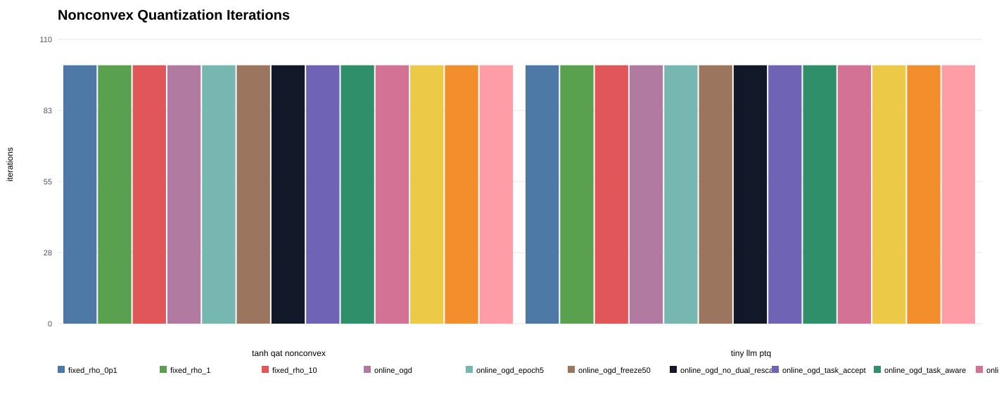
Nonconvex Task Metric By Problem
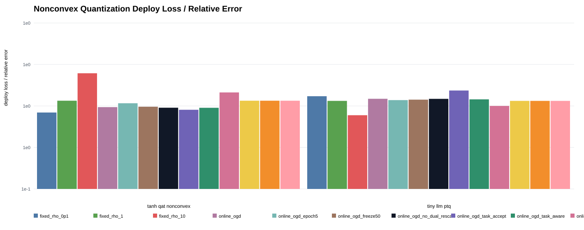
Nonconvex Final Primal By Problem
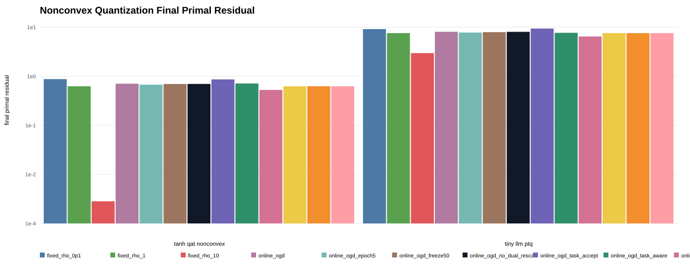
Nonconvex Final Dual By Problem
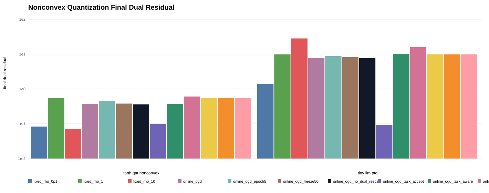
Nonconvex Rho Changes By Problem
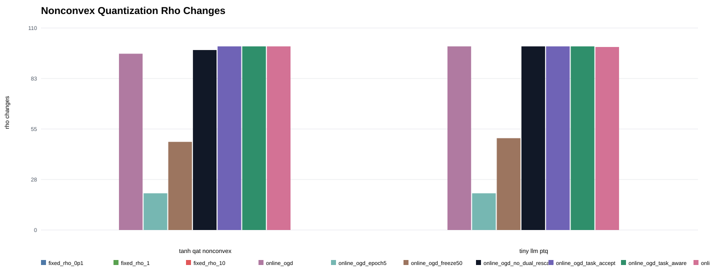
Nonconvex Tanh Qat Nonconvex Objective Seed0
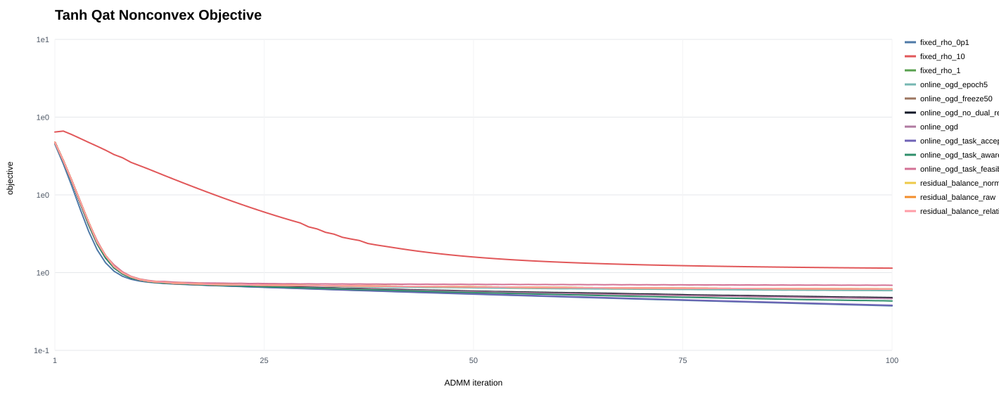
Nonconvex Tanh Qat Nonconvex Deploy Loss Seed0
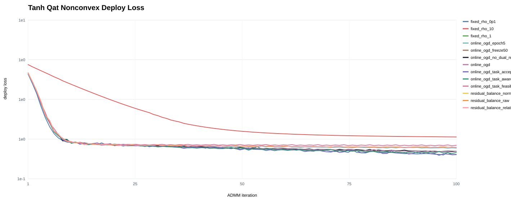
Nonconvex Tanh Qat Nonconvex Train Loss Seed0
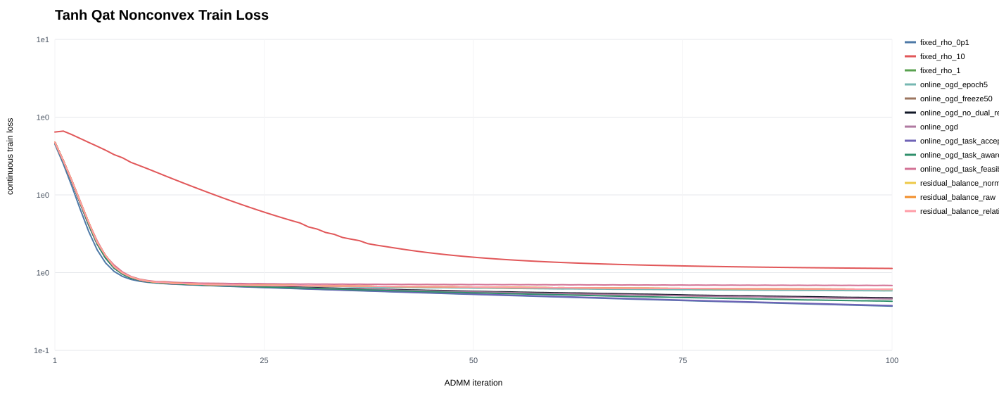
Nonconvex Tanh Qat Nonconvex Primal Norm Seed0
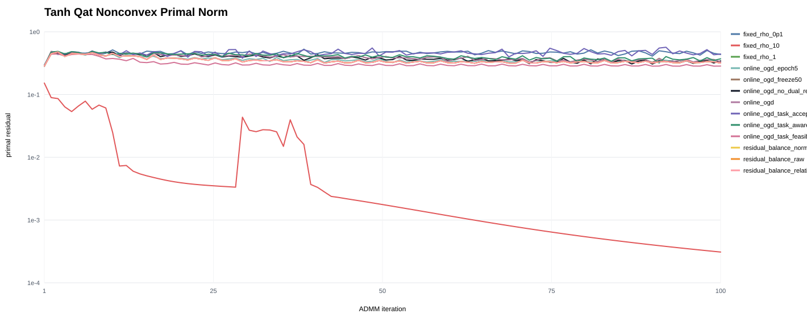
Nonconvex Tanh Qat Nonconvex Dual Norm Seed0
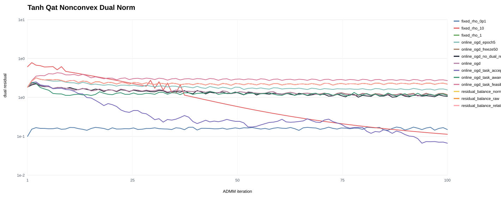
Nonconvex Tanh Qat Nonconvex Rho Seed0
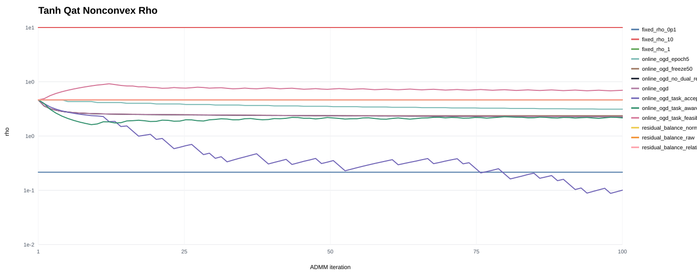
Nonconvex Tiny Llm Ptq Objective Seed0
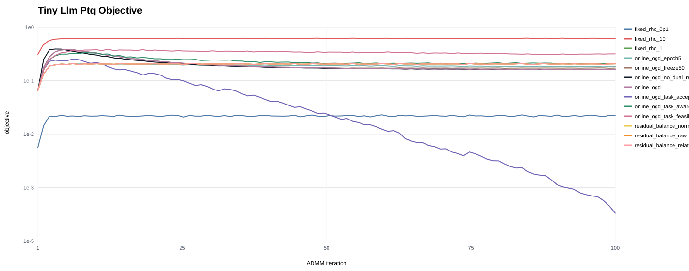
Nonconvex Tiny Llm Ptq Deploy Rel Error Seed0
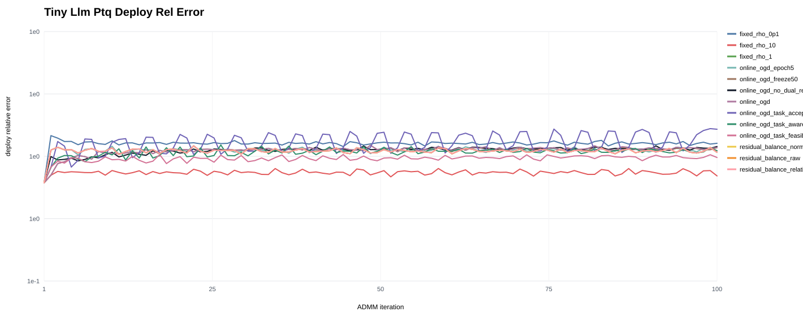
Nonconvex Tiny Llm Ptq Primal Norm Seed0
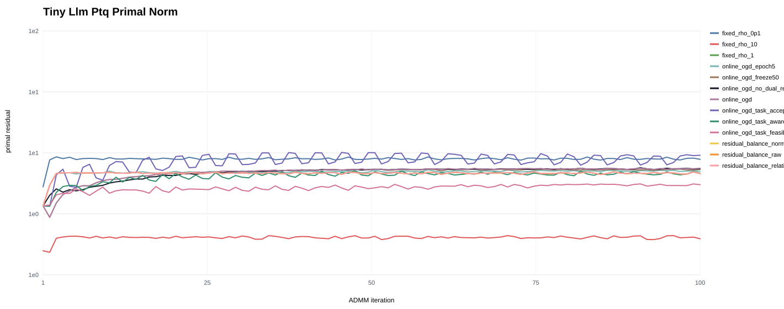
Nonconvex Tiny Llm Ptq Dual Norm Seed0
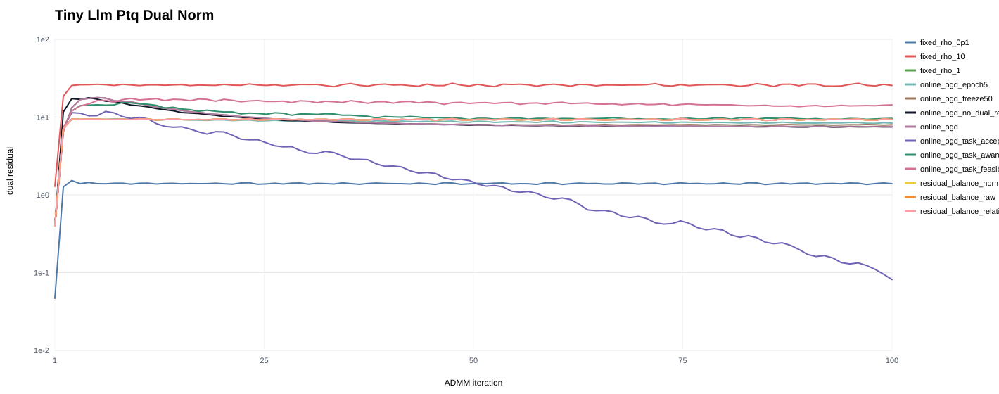
Nonconvex Tiny Llm Ptq Rho Seed0
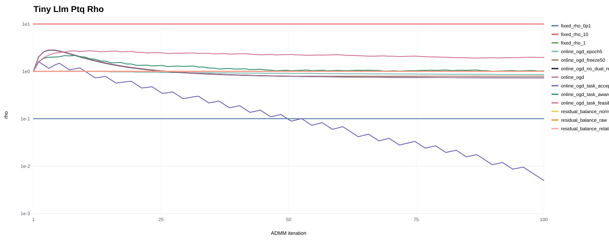
Grouped Metrics
| problem | method | iterations | task_metric | final_primal | final_dual | final_rho | rho_changes | wall_time_sec |
|---|---|---|---|---|---|---|---|---|
| tanh_qat_nonconvex | fixed_rho_0p1 | 100.00 | 0.29 | 0.48 | 0.08 | 0.10 | 0 | 0.38 |
| tanh_qat_nonconvex | fixed_rho_1 | 100.00 | 0.34 | 0.31 | 0.54 | 1.00 | 0 | 0.31 |
| tanh_qat_nonconvex | fixed_rho_10 | 100.00 | 0.50 | 0.000367 | 0.07 | 10.00 | 0 | 0.37 |
| tanh_qat_nonconvex | online_ogd | 100.00 | 0.31 | 0.36 | 0.37 | 0.59 | 96.00 | 0.49 |
| tanh_qat_nonconvex | online_ogd_epoch5 | 100.00 | 0.33 | 0.34 | 0.44 | 0.75 | 20.00 | 0.56 |
| tanh_qat_nonconvex | online_ogd_freeze50 | 100.00 | 0.31 | 0.36 | 0.38 | 0.61 | 48.00 | 0.39 |
| tanh_qat_nonconvex | online_ogd_no_dual_rescale | 100.00 | 0.31 | 0.36 | 0.36 | 0.58 | 98.00 | 0.29 |
| tanh_qat_nonconvex | online_ogd_task_accept | 100.00 | 0.30 | 0.47 | 0.10 | 0.14 | 100.00 | 0.62 |
| tanh_qat_nonconvex | online_ogd_task_aware | 100.00 | 0.31 | 0.37 | 0.37 | 0.62 | 100.00 | 0.27 |
| tanh_qat_nonconvex | online_ogd_task_feasibility | 100.00 | 0.38 | 0.25 | 0.60 | 1.39 | 100.00 | 0.34 |
| tanh_qat_nonconvex | residual_balance_normalized | 100.00 | 0.34 | 0.31 | 0.54 | 1.00 | 0 | 0.60 |
| tanh_qat_nonconvex | residual_balance_raw | 100.00 | 0.34 | 0.31 | 0.54 | 1.00 | 0 | 0.47 |
| tanh_qat_nonconvex | residual_balance_relative | 100.00 | 0.34 | 0.31 | 0.54 | 1.00 | 0 | 0.29 |
| tiny_llm_ptq | fixed_rho_0p1 | 100.00 | 0.36 | 8.96 | 1.41 | 0.10 | 0 | 1.52 |
| tiny_llm_ptq | fixed_rho_1 | 100.00 | 0.34 | 7.07 | 9.82 | 1.00 | 0 | 1.58 |
| tiny_llm_ptq | fixed_rho_10 | 100.00 | 0.28 | 2.19 | 28.21 | 10.00 | 0 | 1.59 |
| tiny_llm_ptq | online_ogd | 100.00 | 0.35 | 7.64 | 7.75 | 0.72 | 100.00 | 3.44 |
| tiny_llm_ptq | online_ogd_epoch5 | 100.00 | 0.34 | 7.31 | 8.73 | 0.85 | 20.00 | 1.66 |
| tiny_llm_ptq | online_ogd_freeze50 | 100.00 | 0.35 | 7.48 | 8.22 | 0.78 | 50.00 | 1.51 |
| tiny_llm_ptq | online_ogd_no_dual_rescale | 100.00 | 0.35 | 7.63 | 7.71 | 0.72 | 100.00 | 1.35 |
| tiny_llm_ptq | online_ogd_task_accept | 100.00 | 0.39 | 9.24 | 0.09 | 0.00589 | 100.00 | 1.34 |
| tiny_llm_ptq | online_ogd_task_aware | 100.00 | 0.35 | 7.20 | 9.96 | 1.00 | 100.00 | 1.83 |
| tiny_llm_ptq | online_ogd_task_feasibility | 100.00 | 0.32 | 5.79 | 15.80 | 2.05 | 99.67 | 1.43 |
| tiny_llm_ptq | residual_balance_normalized | 100.00 | 0.34 | 7.07 | 9.82 | 1.00 | 0 | 1.67 |
| tiny_llm_ptq | residual_balance_raw | 100.00 | 0.34 | 7.07 | 9.82 | 1.00 | 0 | 1.64 |
| tiny_llm_ptq | residual_balance_relative | 100.00 | 0.34 | 7.07 | 9.82 | 1.00 | 0 | 1.79 |